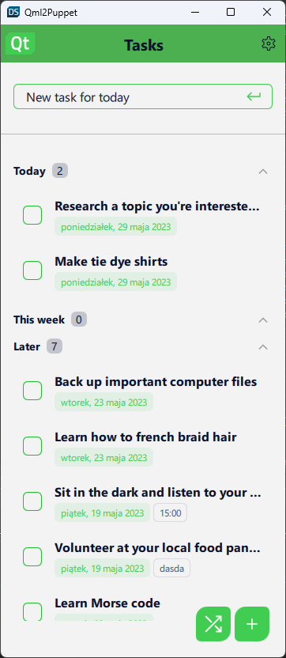
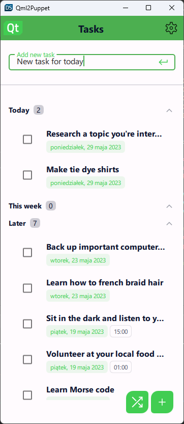
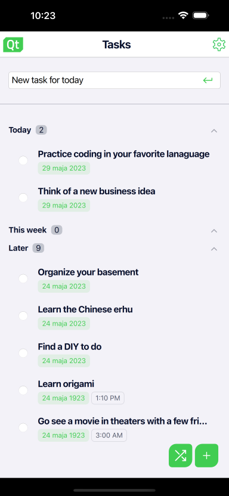
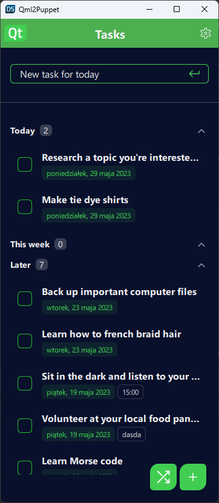
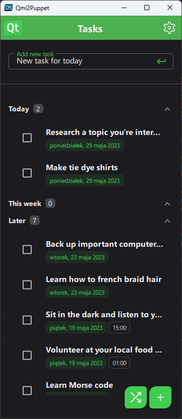
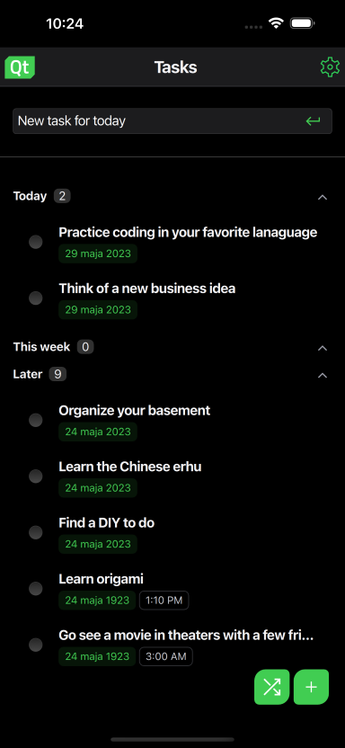
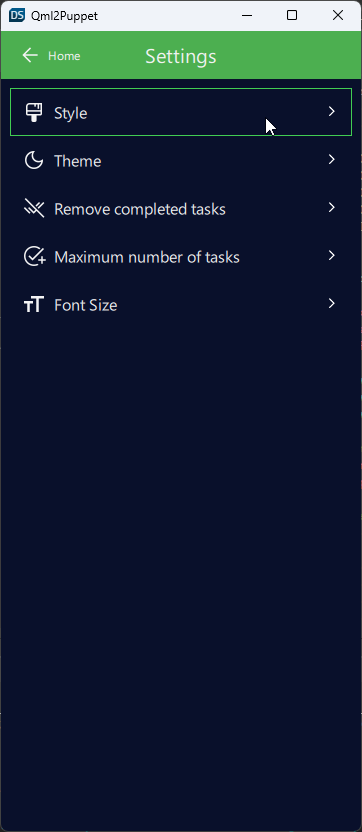
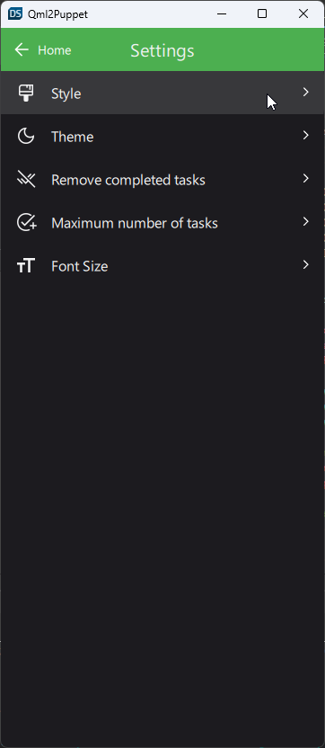
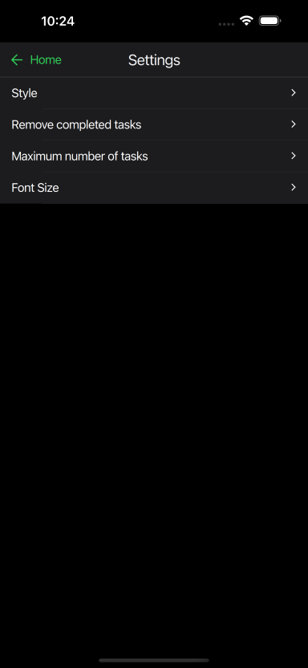

To Do List
A QML implementation of to do list application that demonstrates how to create application thats looks native on any platform.
| CustomStyle | Material | iOS |
|---|---|---|
|  |  |  |
|  |  |  |
|  |  |  |
To Do List demonstrates a sample to-do list application that looks native on any platform. The example can be run and edited in both QtDesignStudio and QtCreator. It shows how to create and use a custom style, how to use settings to control the appearance and behavior of the application. It also presents how to implement simple drag and drop behavior on delegates. The application uses local storage to store items on the device and XMLHttpRequest to retrieve data from the public API (Random Tasks functionality). The views are controlled by StackView component.
Selecting Application Style
The application supports different styles depending on the target platform. CustomStyle, Basic, Material and Universal are available on each platform (Windows, Android, iOS, macOS). The Windows style is available only on Windows and the iOS style is available only on iOS. The list of available styles is located in one of the subpages of the SettingsView called Style. The currently used style can be changed from the same place. A restart is required to apply the changes. The application will inform the user about this with the ToolTip information.
Changing theme
Dark and Light themes are also supported in each style. The theme can be changed from the Theme subpage of the SettingsView. Not every style allows the user to change the theme manually, e.g. on iOS this option is not available. In this case the theme will be changed according to the default system settings. The first time the app is launched it will use the system theme.
Controlling app behavior from app settings
The Behavior and style of the application can be changed from SettingsView. The settings allow the user to change:
- style
- theme
- font size
- maximum number of tasks
- if the finished tasks should be removed automatically
Tasks List Implementation
The application has three different lists:
- Today's tasks list → The tasks with today's date as due date.
- This week's tasks list → the tasks that are due in the next seven days.
- Later tasks → the tasks that do not fit into the above lists.
The tasks are distributed between the list models at the start of the application. Of course, the tasks can migrate through the list models at runtime (when their due date changes). The definition of the single list is done in TasksList.qml and TasksListForm.ui.qml, the instances are created in TasksListsView.qml/TasksListsViewForm.ui.qml.
ListModel {
id: todayTasksListModel
}
ListModel {
id: thisWeekTasksListModel
}
ListModel {
id: laterTasksListModel
}
Column {
id: column
anchors.fill: parent
spacing: 14
TasksList {
id: todayTasks
width: column.width
maxHeight: 180
listModel: todayTasksListModel
headerText: qsTr("Today")
tasksCount: todayTasksListModel.count
}
TasksList {
id: thisWeekTasks
width: column.width
maxHeight: column.height - y - 60
listModel: thisWeekTasksListModel
headerText: qsTr("This week")
tasksCount: thisWeekTasksListModel.count
}
TasksList {
id: laterTasks
width: column.width
maxHeight: column.height - y
listModel: laterTasksListModel
headerText: qsTr("Later")
tasksCount: laterTasksListModel.count
}
}
Filling the list model with data is done in TasksListsView.qml in Component.onCompleted.
function createTasksLists() : void {
var tasks = Database.getTasks()
var currentDate = new Date()
var format = Qt.locale().dateFormat(Locale.LongFormat)
var dateStr = currentDate.toLocaleDateString(Qt.locale(),format)
tasks.forEach( function(task){
if (task.date === dateStr) {
todayTasksModel.append(task)
} else if (checkThisWeekDate(task.date)) {
thisWeekTasksModel.append(task)
} else {
laterTasksModel.append(task)
}
})
}
Component.onCompleted: createTasksLists()
Swipe, Drag and Drop behavior
The list view uses the TasksListDelegate as a delegate. The delegate is a SwipeDelegate, it allows the user to swipe the item to highlight it (the item is moved to the top of the list) or to remove it. It also allows the user to mark the task as done (the item is moved to the bottom) or drag and drop the item to move it to a specific position in the list. Implementation of these behaviors is done in TasksListDelegate.qml.
Local Storage usage
Local storage is used to read and write the task items to SQLite databases. The implementation of this and other helper functions is done in Database.qml, which is a singleton object.
property var _db
function _database() {
if (_db) return _db
try {
let db = LocalStorage.openDatabaseSync("ToDoList", "1.0", "ToDoList app database")
db.transaction(function (tx) {
tx.executeSql('CREATE TABLE IF NOT EXISTS tasks (
task_id INTEGER PRIMARY KEY AUTOINCREMENT,
task_name,
task_dueDate TEXT,
task_dueTime TEXT,
task_notes TEXT,
done INTEGER,
highlighted INTEGER
)');
})
_db = db
} catch (error) {
console.log("Error opening databse: " + error)
};
return _db
}
function addTask(taskName, taskDueDate, taskDueTime, taskNotes, taskDone, taskHighlighted) {
let results
root._database().transaction(function(tx){
tx.executeSql("INSERT INTO tasks (task_name, task_dueDate, task_dueTime,
task_notes, done, highlighted) VALUES(?,?,?,?,?,?);",
[taskName, taskDueDate, taskDueTime, taskNotes, taskDone, taskHighlighted])
results = tx.executeSql("SELECT * FROM tasks ORDER BY task_id DESC LIMIT 1")
})
return results.rows.item(0).task_id
}
Usage of XMLHttpRequest to retrieve data from public API
The XMLHttpRequest is used to send request to some public API and retrieve the response data. The application uses boredapi which can return a random task to do. The task is then added to the list of today's tasks.
function sendHttpRequest() : void {
var http = new XMLHttpRequest()
var url = "https://www.boredapi.com/api/activity";
http.open("GET", url, true);
http.setRequestHeader("Content-type", "application/json");
http.setRequestHeader("Connection", "close");
http.onreadystatechange = function() {
if (http.readyState == 4) {
if (http.status == 200) {
var object = JSON.parse(http.responseText.toString());
var currentDate = new Date()
var format = Qt.locale().dateFormat(Locale.LongFormat)
addTask(todayTasksModel, object.activity,
currentDate.toLocaleDateString(Qt.locale(), format), "","")
} else {
console.log("error: " + http.status)
}
}
}
http.send();
}